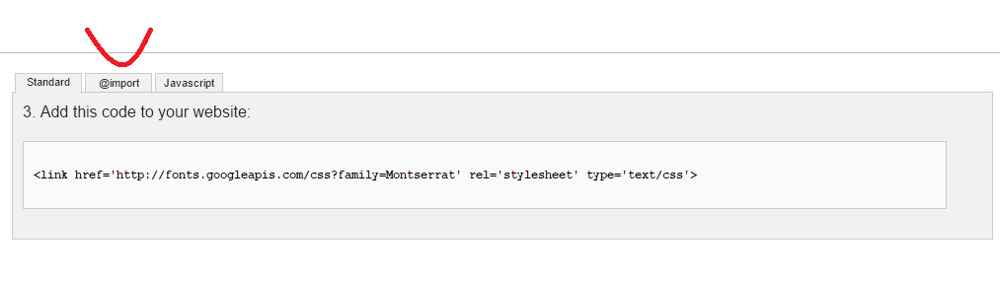

Because apparently this post doesn't exist on the internet
Version note: this applies to Foundation 5 used with Rails.I'm going to go ahead and assume here that you've used the gem to install Foundation on your Rails project. If you're having compatability issues with the newest update and sass-rails, check out this post on Stack Overflow for a solution.
So now you've got your shiny new Rails app ready for a little styling. You want to use that awesome font you found on Google Fonts, or maybe several awesome fonts. No judgement (well, maybe a little). The problem is that you're not quite sure where to put it and how to use it, aside from the general HTML/CSS way.
Step 1:
Find that font. Go to the Google Font page where you'd normally copy the stylesheet link if this was CSS. Click the @import button as seen in the image below with the sort-of-not-really arrow-shaped red line.

Step 2:
Copy that sucker.
Step 3:
Go to your foundation_and_overrides.scss file. Your file path should look pretty similar to mine, albeit with a different name.

Step 4:
Find somewhere good to paste that sucker in. I put it in Global because I figured I'd be assigning a font variable (or two) that would apply globally to the project.

Step the 5th:
No pretty screenshot this time because it would be redundant. See above. Assign a variable to your different fonts so you can refer to them later. You can probably come up with better names than google-font and google-font2. You can probably find a better place to put it too, but hey, this works.
Step 6:
So Katherine, how do I use these shiny new fonts? Good question. For your general body font change $body-font-family to the variable you assigned to your preferred font. In this case it's Lato.
To change the font style of your header, change $header-font-family to the variable you assigned to your preferred font. In this case it's Montserrat.
Note: if you want to change the font weight (to make it bold for instance), you need to uncomment out the default font weight lines which should be just below the $font-family stuff in the c. Global section of your foundation_and_overrides.scss file.
Hope this helps somebody. If you've got suggestions for improvement, please drop me a line through any of the contact methods on this site.